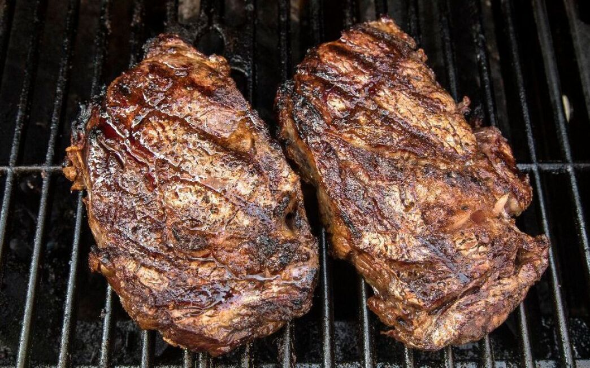

BBQ Steak

Description
Great tasting and easy to prepare BBQ steak.
Ingredients
- 1 small onion, chopped
- 7 cloves garlic
- 1/2 cup olive oil
- 1/2 cup vinegar
- 1/2 cup soy sauce
- 2 tablespoons chopped fresh rosemary
- 2 tablespoons Dijon-style prepared mustard
- 2 teaspoons salt
- 1 teaspoon black pepper
- 1 (2 pound) tri-tip steak
Steps
- Place onion, garlic, olive oil, vinegar, soy sauce,
rosemary, mustard, salt, and pepper into the bowl of a
food processor. Process until smooth. Place steak in a
large resealable plastic bag. Pour marinade over steaks,
seal, and refrigerate for about 3 hours.
- Preheat the grill for high heat.
- Brush grill grate with oil. Discard marinade, and
place steak on the prepared grill. Cook for 7 minutes
per side, or to desired doneness.
Back to index